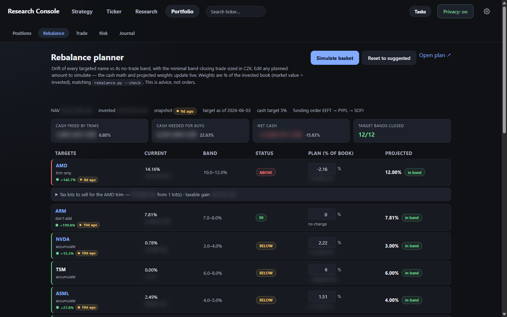
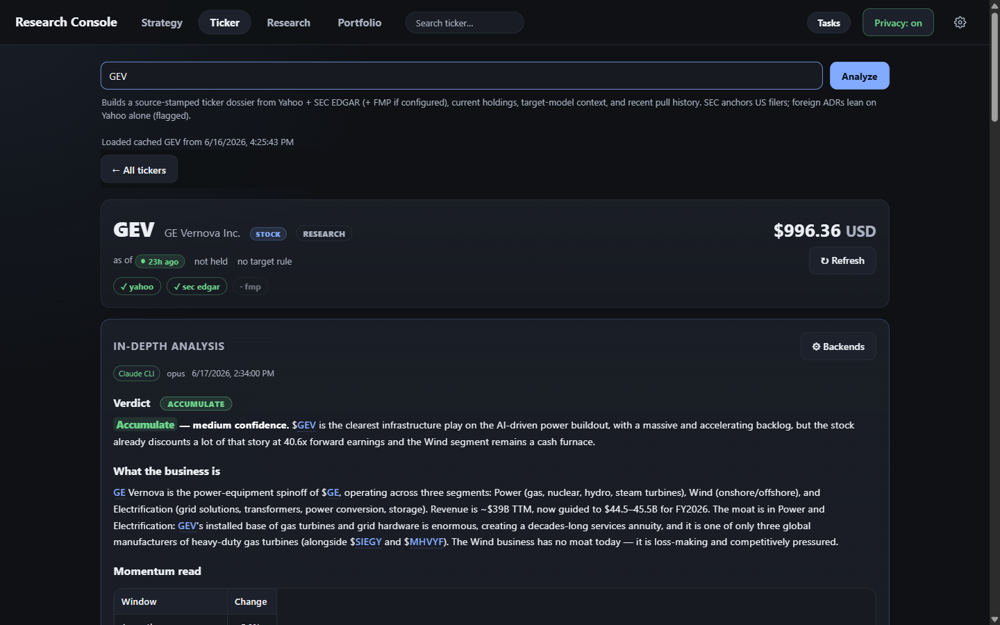
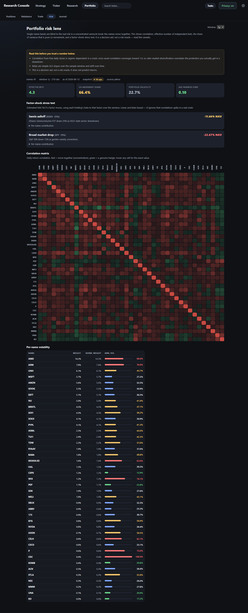
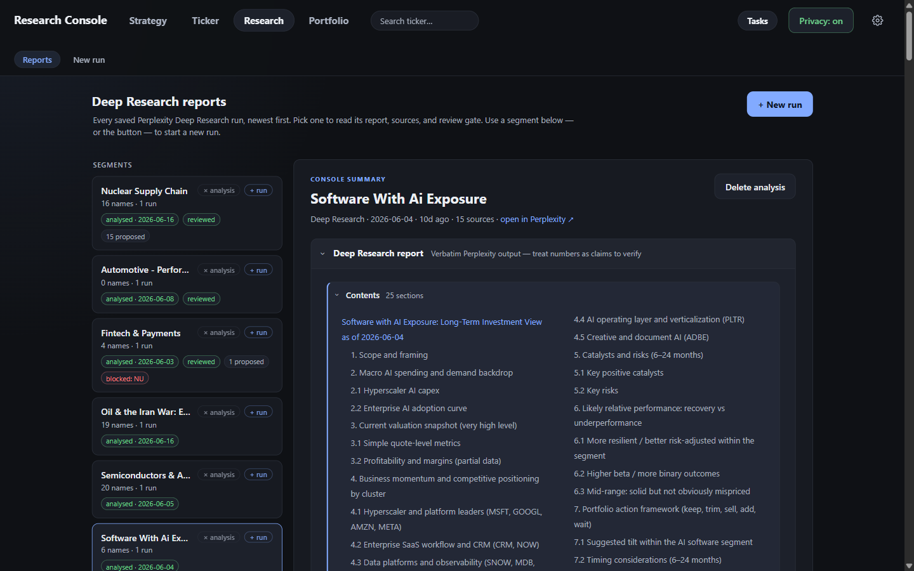
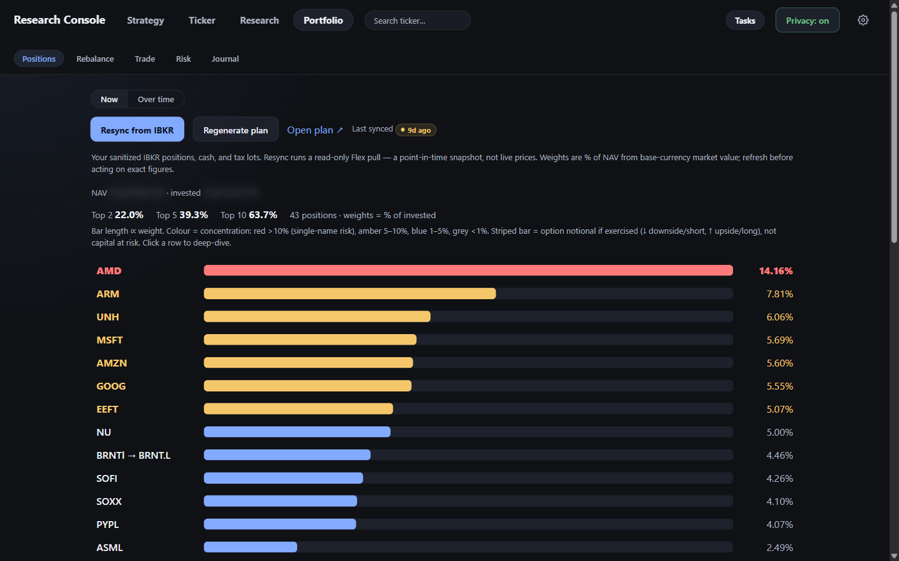
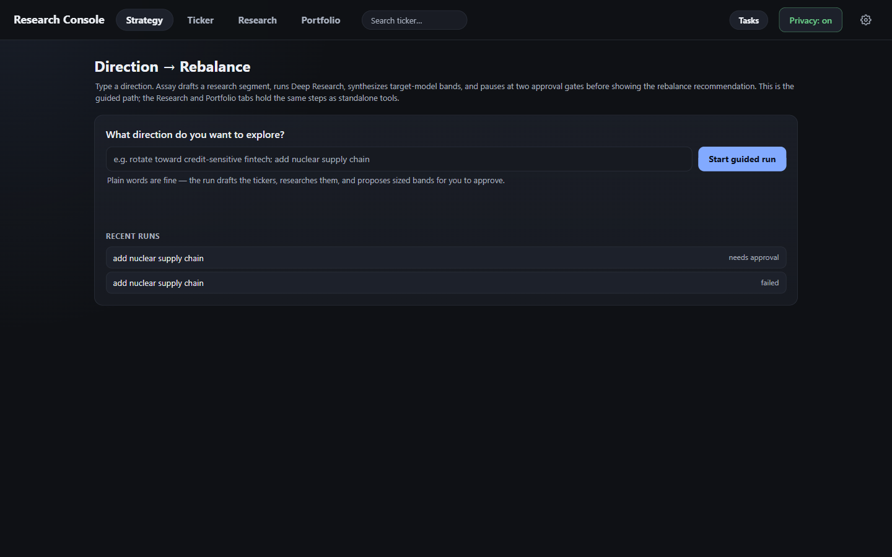
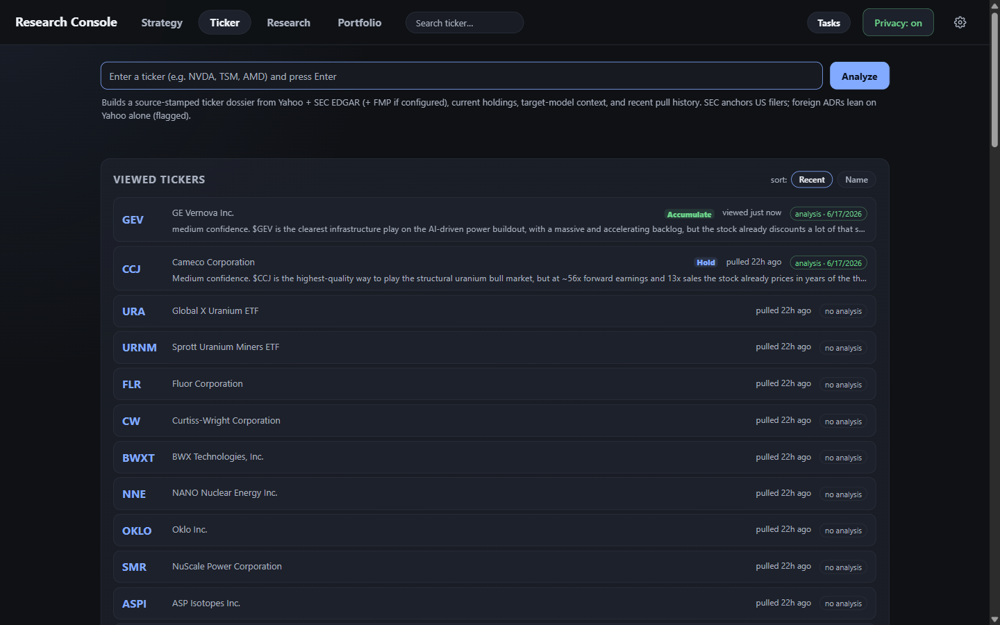

Verified numbers
Live deep dives on any ticker — price, momentum, market cap, P/E, P/S, revenue, margins, share count — pulled from Yahoo and cross-checked against SEC EDGAR (and FMP if a key is set).
Local-first · single-user · open source
Assay is a portfolio research & rebalancing workbench built on distrust. Like a metallurgical assay tests whether a bar is really gold, it tests whether the numbers behind a position hold up — before you act on them.

Market data is messy. An impossible market cap, a stale price, a foreign filer with no independent anchor — any one of them can derail a rebalance. Assay pulls the same figures from multiple sources, cross-checks them, and surfaces the disagreements instead of smoothing them over.
Internally-impossible market cap caught by cross-checking share count against the filing.
A quote that hasn't moved since last week is surfaced, not silently trusted.
When sources agree, the number earns a pass. When they don't, you see the gap.
Live deep dives on any ticker — price, momentum, market cap, P/E, P/S, revenue, margins, share count — pulled from Yahoo and cross-checked against SEC EDGAR (and FMP if a key is set).
Current NAV weights versus your target bands, with risk, tax-lot, and what-if tooling to pressure-test a trade basket before you ever place it.
Pull a whole peer universe — say, semiconductors — ranked and sortable, cross-joined against what you already own so owned-vs-cheaper-peer is obvious at a glance.
Perplexity report capture, source extraction, a local review gate, and draft target-model proposals — none of which ever create a trade on their own.
Fetched numbers and your written thesis live in separate stores. Re-pulling data never clobbers your reasoning, and your reasoning never masquerades as data.
The only surface that can place orders is opt-in, off by default, and paper-first. It refuses live placement until you flip a second flag — and you confirm every order by hand.
Real screenshots from the running app against a live portfolio — with Privacy mode on, so the structure shows and the balance sheet doesn't.
Price, momentum, valuation, and an AI verdict with an explicit confidence level — over a row of badges showing which sources (Yahoo, SEC EDGAR, FMP) actually backed each figure, not just that a number exists.

A full correlation heatmap, the effective number of independent bets, factor-shock stress tests, and per-name volatility — because single-name bands are blind to a book of names that all move together. Hover to scroll the whole view.

Saved Perplexity Deep Research reports with their sources and a local review gate, organized by segment. Reports inform target-model bands — they never place a trade on their own.




Type a direction. Assay drafts a segment, runs Deep Research, synthesizes target-model bands, and pauses at two human approval gates before it ever shows a rebalance recommendation. Research never trades.
Turn a theme into a candidate research segment.
Approve the tickers and sleeves. Gate 1
Capture a Perplexity report and its sources.
Derive target-model weight bands from the report.
Local cross-check against your holdings. Gate 2
A rebalance proposal — yours to place, or not.
No Flask, no FastAPI, no pandas, no yfinance — nothing to pip install. It talks to Yahoo and SEC directly via urllib and serves on http.server, bound to 127.0.0.1 only.
A real SPA with an async job model, typed incrementally module-by-module. Built once; the Python server serves the bundle. The API, jobs, and auth stay on the backend.
Yahoo for live quotes, SEC EDGAR for filing truth, optional FMP as a tiebreaker. Disagreements are flagged — share-count mismatches, impossible caps, stale prices, anchor-less foreign filers.
Holdings live in a separate private submodule; the public repo carries no NAV, P/L, or credentials. It runs on your machine, against your data, for an audience of one.
Python 3 and Node.js are the only prerequisites. The private holdings submodule is optional — without it the app still starts, just with empty portfolio views.
git submodule update --init # private holdings (optional)
npm install && npm run build # build the SPA once
$env:SEC_USER_AGENT = "assay research (you@example.com)"
py -3 tools/serve.py # open http://127.0.0.1:6060Assay is for personal research and informational purposes only. It is not financial, investment, tax, or legal advice, and nothing it produces is a recommendation to buy or sell any security. Market data comes from third parties that may be delayed, incomplete, or wrong — verify everything independently before acting. The optional Trade desk can place real orders only when you explicitly enable it, preview the basket, and confirm each order; you alone are responsible for every order and its outcome. Use at your own risk.